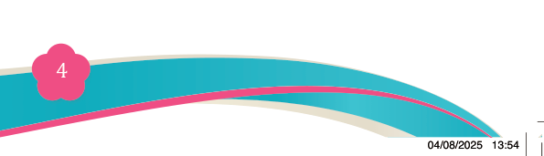
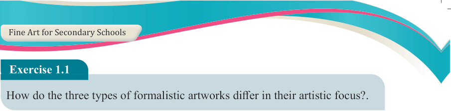
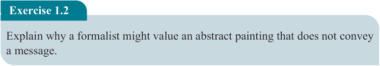
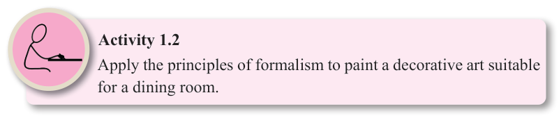

Fine Art for Secondary Schools

4

Student’s Book Form Two


Exercise 1.1

How do the three types of formalistic artworks differ in their artistic focus?.
Principles of formalism theory
Formalism is guided by the following principles:
(a) Focus on visual elements: The evaluation of an artwork is based on the effective

use of formal elements such as colour, line, shape, texture and space.
(b) Emphasis on artistic principles: In analysing an artwork, formalism focuses on balance, contrast, rhythm, harmony, proportion and unity.
(c) Abstract and non-representational art: Formalism often favours abstract or non- representational art that focuses purely on form rather than real-life subjects.
(d) Aesthetic value over meaning: An artwork does not require explicit meaning or
narrative to be valuable. It can be appreciated for its beauty, composition and
organization of visual elements. For example, an artwork may be appreciated
for its balance and texture, regardless of whether it conveys a specific message.
(e) Objective analysis: Art is analysed based on its structural and compositional qualities rather than personal emotions or interpretations.

Activity 1.2
Apply the principles of formalism to paint a decorative art suitable for a dining room.
Exercise 1.2
Explain why a formalist might value an abstract painting that does not convey a message.
Procedures for creating artwork by using formalism theory
The artists employing the formalist approach focus on exploring artistic elements
and principles to produce visually harmonious and structured compositions. For example, a poster may exclusively have geometric lines and limited colour to emphasize repetition and symmetry, establishing rhythm and balance.
04/08/2025 13:54